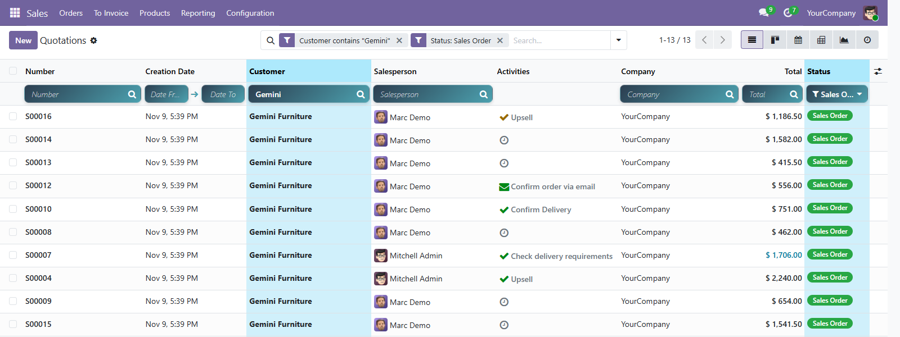
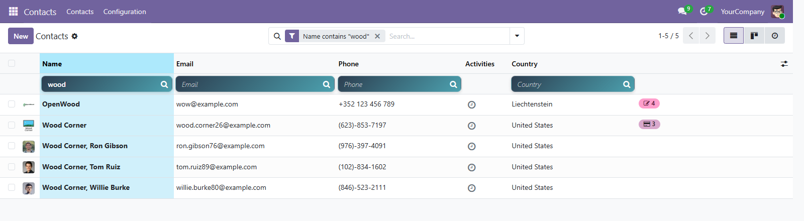
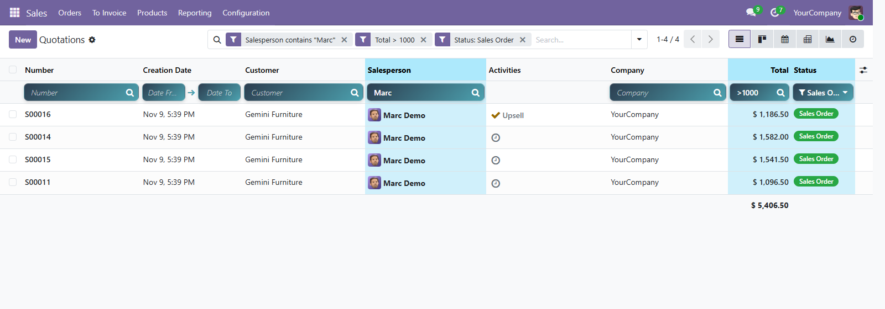
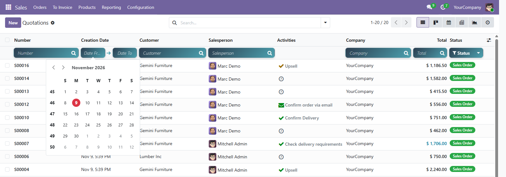
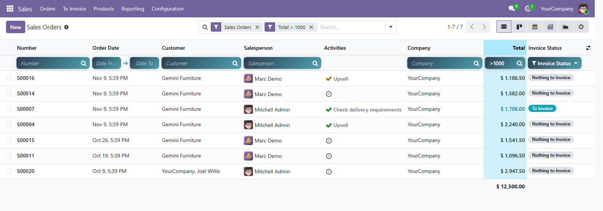
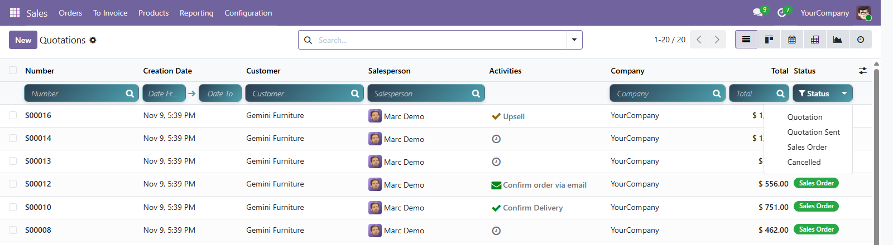
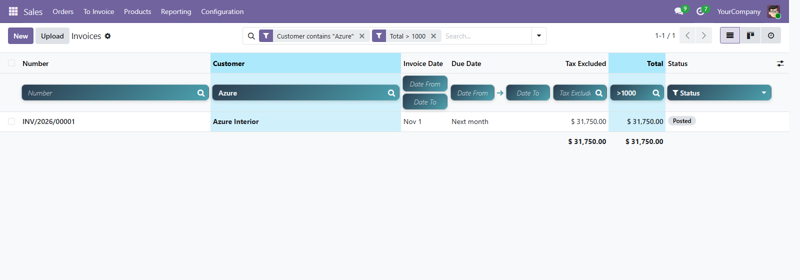
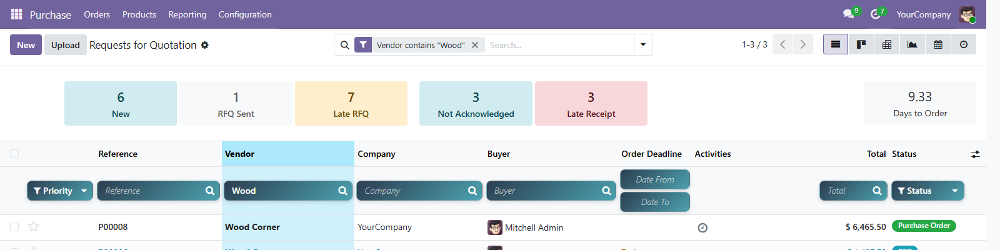

<section style="font-family:'Inter','Segoe UI',Roboto,Helvetica,Arial,sans-serif;color:#1F2937;background:#FFFFFF;">
<div class="container" style="max-width:1140px;margin:0 auto;padding:0 16px;">

    <!-- ============ BADGES ============ -->
    <div style="display:flex;justify-content:space-between;flex-wrap:wrap;align-items:center;border-bottom:1px solid #E5E7EB;padding:14px 0;">
        <div style="display:flex;flex-wrap:wrap;">
            <span style="background:#017E84;color:#fff;font-size:13px;font-weight:600;padding:5px 18px;margin:3px;border-radius:50px;">Community</span>
            <span style="background:#875A7B;color:#fff;font-size:13px;font-weight:600;padding:5px 18px;margin:3px;border-radius:50px;">Enterprise</span>
            <span style="background:#374151;color:#fff;font-size:13px;font-weight:600;padding:5px 18px;margin:3px;border-radius:50px;">Odoo.sh / On-Premise</span>
        </div>
        <div style="display:flex;flex-wrap:wrap;">
            <span style="background:#875A7B;color:#fff;font-size:13px;font-weight:600;padding:5px 18px;margin:3px;border-radius:50px;">Odoo 19</span>
        </div>
    </div>

    <!-- ============ HERO ============ -->
    <div style="text-align:center;padding:64px 0 32px;">
        <div style="display:inline-block;background:#E6F4F4;color:#017E84;font-weight:700;font-size:13px;letter-spacing:1px;padding:6px 16px;border-radius:50px;margin-bottom:18px;">EXCEL-LIKE COLUMN FILTERS FOR EVERY LIST VIEW</div>
        <h1 style="font-size:44px;font-weight:800;line-height:1.2;color:#111827;margin:0 0 18px;">List Advanced Search</h1>
        <h2 style="font-size:24px;font-weight:600;line-height:1.45;color:#374151;margin:0 auto 18px;max-width:880px;">
            A search box under <u>every column</u> of <u>every list view</u> &mdash;
            type and the list filters <span style="color:#017E84;">instantly</span>, no need to open the filter menu.
        </h2>
        <p style="font-size:17px;line-height:1.7;color:#6B7280;max-width:820px;margin:0 auto 30px;">
            Sales orders, invoices, contacts, products, purchase orders, any custom model&hellip;
            Text, numbers, dates, status, yes/no and many2one columns each get the right filter.
            Combine as many columns as you want, the filtered columns are <b>highlighted</b>,
            and every filter also appears as a normal Odoo facet in the search bar.
        </p>

        <div style="display:flex;flex-wrap:wrap;justify-content:center;margin-bottom:36px;">
            <div style="background:#F9FAFB;border:1px solid #E5E7EB;border-radius:14px;padding:16px 22px;margin:6px;min-width:190px;">
                <div style="font-size:28px;font-weight:800;color:#017E84;">All</div>
                <div style="font-size:14px;color:#6B7280;">list views, any model</div>
            </div>
            <div style="background:#F9FAFB;border:1px solid #E5E7EB;border-radius:14px;padding:16px 22px;margin:6px;min-width:190px;">
                <div style="font-size:28px;font-weight:800;color:#875A7B;">6</div>
                <div style="font-size:14px;color:#6B7280;">column types supported</div>
            </div>
            <div style="background:#F9FAFB;border:1px solid #E5E7EB;border-radius:14px;padding:16px 22px;margin:6px;min-width:190px;">
                <div style="font-size:28px;font-weight:800;color:#017E84;">1</div>
                <div style="font-size:14px;color:#6B7280;">request per search, debounced</div>
            </div>
            <div style="background:#F9FAFB;border:1px solid #E5E7EB;border-radius:14px;padding:16px 22px;margin:6px;min-width:190px;">
                <div style="font-size:28px;font-weight:800;color:#875A7B;">0</div>
                <div style="font-size:14px;color:#6B7280;">configuration needed</div>
            </div>
        </div>

        
        <p style="font-size:14px;color:#9CA3AF;margin-top:12px;">A filter row appears under the header of every list. Filtered columns are highlighted and each filter is shown as a facet in the search bar.</p>
    </div>

    <!-- ============ PAIN POINTS ============ -->
    <div style="padding:40px 0;">
        <h2 style="text-align:center;font-size:32px;font-weight:800;color:#111827;margin:0 0 10px;">Searching a list should not take 5 clicks</h2>
        <p style="text-align:center;font-size:17px;color:#6B7280;max-width:760px;margin:0 auto 32px;">In standard Odoo, filtering on a column that is not in the search view means opening the filter menu, adding a custom filter, picking the field, the operator and the value. List Advanced Search puts that filter right where you look: under the column.</p>
        <div style="display:flex;flex-wrap:wrap;margin:0 -8px;">
            <div style="flex:1 1 320px;margin:8px;background:#FEF2F2;border-radius:14px;padding:24px;">
                <div style="font-weight:700;color:#B91C1C;font-size:15px;margin-bottom:12px;">WITHOUT this module</div>
                <div style="font-size:15px;line-height:1.9;color:#4B5563;">
                    &#10007; Only the fields defined in the search view can be searched quickly<br/>
                    &#10007; Custom filters need several clicks and a domain editor<br/>
                    &#10007; Date ranges and amount thresholds are tedious to enter<br/>
                    &#10007; Hard to see which columns are currently filtered
                </div>
            </div>
            <div style="flex:1 1 320px;margin:8px;background:#ECFDF5;border-radius:14px;padding:24px;">
                <div style="font-weight:700;color:#047857;font-size:15px;margin-bottom:12px;">WITH List Advanced Search</div>
                <div style="font-size:15px;line-height:1.9;color:#4B5563;">
                    &#10003; Every stored column of the list can be filtered in place<br/>
                    &#10003; Type and the list refreshes &ndash; no confirm button<br/>
                    &#10003; Date pickers, status dropdowns and <code>&gt;1000</code>-style operators<br/>
                    &#10003; Filtered columns are highlighted, facets stay in the search bar
                </div>
            </div>
        </div>
    </div>

    <!-- ============ FEATURE GRID ============ -->
    <div style="padding:20px 0 40px;">
        <h2 style="text-align:center;font-size:32px;font-weight:800;color:#111827;margin:0 0 28px;">One filter per column type</h2>
        <div style="display:flex;flex-wrap:wrap;margin:0 -8px;">
            <div style="flex:1 1 300px;margin:8px;border:1px solid #E5E7EB;border-radius:14px;padding:22px;">
                <div style="font-size:22px;margin-bottom:6px;">&#128269;</div>
                <div style="font-weight:700;font-size:17px;color:#111827;">Text &amp; references</div>
                <div style="font-size:14px;line-height:1.7;color:#6B7280;margin-top:6px;">Char, text, many2one and many2many columns: &ldquo;contains&rdquo; search, case-insensitive. Search a customer, a salesperson, a tag or an order reference.</div></div>
            <div style="flex:1 1 300px;margin:8px;border:1px solid #E5E7EB;border-radius:14px;padding:22px;">
                <div style="font-size:22px;margin-bottom:6px;">&#128290;</div>
                <div style="font-weight:700;font-size:17px;color:#111827;">Numbers with operators</div>
                <div style="font-size:14px;line-height:1.7;color:#6B7280;margin-top:6px;">Integer, float and monetary columns accept <code>&gt;1000</code>, <code>&gt;=1000</code>, <code>&lt;50</code>, <code>&lt;=50</code>, <code>=12</code>, <code>!=0</code>. A plain number keeps the &ldquo;contains&rdquo; search.</div></div>
            <div style="flex:1 1 300px;margin:8px;border:1px solid #E5E7EB;border-radius:14px;padding:22px;">
                <div style="font-size:22px;margin-bottom:6px;">&#128197;</div>
                <div style="font-weight:700;font-size:17px;color:#111827;">Date ranges</div>
                <div style="font-size:14px;line-height:1.7;color:#6B7280;margin-top:6px;">Date and datetime columns get a &ldquo;from &rarr; to&rdquo; picker. Fill one side only for &ldquo;after&rdquo; / &ldquo;before&rdquo;. Datetimes cover the whole day in the user&rsquo;s timezone.</div></div>
            <div style="flex:1 1 300px;margin:8px;border:1px solid #E5E7EB;border-radius:14px;padding:22px;">
                <div style="font-size:22px;margin-bottom:6px;">&#127991;</div>
                <div style="font-weight:700;font-size:17px;color:#111827;">Status / selection</div>
                <div style="font-size:14px;line-height:1.7;color:#6B7280;margin-top:6px;">Selection columns (status, type, priority&hellip;) show a dropdown with their translated values. Click again to remove the filter.</div></div>
            <div style="flex:1 1 300px;margin:8px;border:1px solid #E5E7EB;border-radius:14px;padding:22px;">
                <div style="font-size:22px;margin-bottom:6px;">&#9989;</div>
                <div style="font-weight:700;font-size:17px;color:#111827;">Yes / No</div>
                <div style="font-size:14px;line-height:1.7;color:#6B7280;margin-top:6px;">Boolean columns get an All / Yes / No selector.</div></div>
            <div style="flex:1 1 300px;margin:8px;border:1px solid #E5E7EB;border-radius:14px;padding:22px;">
                <div style="font-size:22px;margin-bottom:6px;">&#10024;</div>
                <div style="font-weight:700;font-size:17px;color:#111827;">Highlight &amp; facets</div>
                <div style="font-size:14px;line-height:1.7;color:#6B7280;margin-top:6px;">The filtered columns are highlighted. Each column filter is a regular facet: remove it from the search bar and the column input clears itself.</div></div>
        </div>
    </div>

    <!-- 1. LIVE SEARCH -->
    <div style="padding:36px 0;border-bottom:1px solid #F3F4F6;">
        <div style="font-size:13px;font-weight:700;color:#017E84;letter-spacing:1px;">01 &middot; LIVE SEARCH</div>
        <h3 style="font-size:26px;font-weight:800;color:#111827;margin:6px 0 10px;">Type &ndash; the list follows</h3>
        <p style="font-size:16px;line-height:1.7;color:#4B5563;margin:0 0 18px;">Results refresh while you type, after a short pause, so the server receives one request per search instead of one per keystroke. Press <b>Enter</b> to search immediately, <b>Esc</b> to clear the column. Chinese / Japanese / Korean input methods are supported: the search waits until the word is confirmed.</p>
        
    </div>

    <!-- 2. COMBINE -->
    <div style="padding:36px 0;border-bottom:1px solid #F3F4F6;">
        <div style="font-size:13px;font-weight:700;color:#875A7B;letter-spacing:1px;">02 &middot; COMBINE COLUMNS</div>
        <h3 style="font-size:26px;font-weight:800;color:#111827;margin:6px 0 10px;">Filter several columns at once</h3>
        <p style="font-size:16px;line-height:1.7;color:#4B5563;margin:0 0 18px;">Each column adds one facet to the search bar and they are combined with AND. Changing a column replaces its own facet; your other filters, default filters, favorites and group-bys are kept.</p>
        
    </div>

    <!-- 3. DATES -->
    <div style="padding:36px 0;border-bottom:1px solid #F3F4F6;">
        <div style="font-size:13px;font-weight:700;color:#017E84;letter-spacing:1px;">03 &middot; DATE RANGES</div>
        <h3 style="font-size:26px;font-weight:800;color:#111827;margin:6px 0 10px;">From &rarr; to, with Odoo&rsquo;s date picker</h3>
        <p style="font-size:16px;line-height:1.7;color:#4B5563;margin:0 0 18px;">Pick a start date, an end date, or both. Works on date and datetime columns such as order date, invoice date, deadline or creation date.</p>
        
    </div>

    <!-- 4. NUMBERS -->
    <div style="padding:36px 0;border-bottom:1px solid #F3F4F6;">
        <div style="font-size:13px;font-weight:700;color:#875A7B;letter-spacing:1px;">04 &middot; AMOUNTS &amp; QUANTITIES</div>
        <h3 style="font-size:26px;font-weight:800;color:#111827;margin:6px 0 10px;">&ldquo;Orders above 1,000&rdquo; in one word</h3>
        <p style="font-size:16px;line-height:1.7;color:#4B5563;margin:0 0 18px;">Type <code>&gt;1000</code> in the Total column. Operators <code>&gt;</code> <code>&gt;=</code> <code>&lt;</code> <code>&lt;=</code> <code>=</code> <code>!=</code> are supported and the number is read with your language&rsquo;s decimal and thousands separators.</p>
        
    </div>

    <!-- 5. SELECTION -->
    <div style="padding:36px 0;border-bottom:1px solid #F3F4F6;">
        <div style="font-size:13px;font-weight:700;color:#017E84;letter-spacing:1px;">05 &middot; STATUS</div>
        <h3 style="font-size:26px;font-weight:800;color:#111827;margin:6px 0 10px;">Pick a status from a dropdown</h3>
        <p style="font-size:16px;line-height:1.7;color:#4B5563;margin:0 0 18px;">Selection fields list their values, in the user&rsquo;s language. The chosen value is shown on the button and checked in the list.</p>
        
    </div>

    <!-- 6. EVERYWHERE -->
    <div style="padding:36px 0;border-bottom:1px solid #F3F4F6;">
        <div style="font-size:13px;font-weight:700;color:#875A7B;letter-spacing:1px;">06 &middot; EVERY APP</div>
        <h3 style="font-size:26px;font-weight:800;color:#111827;margin:6px 0 10px;">Contacts, Sales, Purchase, Invoicing, Inventory&hellip;</h3>
        <p style="font-size:16px;line-height:1.7;color:#4B5563;margin:0 0 18px;">Nothing to configure: the filter row is added to the list views of all installed apps, including lists with their own custom renderer (sales orders, invoices, bills&hellip;) and your own custom models. Lists embedded inside a form (order lines, invoice lines) are left untouched.</p>
        
        
    </div>

    <!-- ============ HOW IT WORKS ============ -->
    <div style="padding:40px 0;">
        <h2 style="text-align:center;font-size:32px;font-weight:800;color:#111827;margin:0 0 28px;">Ready in 1 minute</h2>
        <div style="display:flex;flex-wrap:wrap;margin:0 -8px;">
            <div style="flex:1 1 280px;margin:8px;text-align:center;padding:22px;border:1px solid #E5E7EB;border-radius:14px;">
                <div style="width:46px;height:46px;line-height:46px;border-radius:50%;background:#017E84;color:#fff;font-weight:800;font-size:20px;margin:0 auto 12px;">1</div>
                <div style="font-weight:700;font-size:17px;">Install</div>
                <div style="font-size:14px;color:#6B7280;margin-top:6px;">Install the module. It only depends on <b>web</b>.</div></div>
            <div style="flex:1 1 280px;margin:8px;text-align:center;padding:22px;border:1px solid #E5E7EB;border-radius:14px;">
                <div style="width:46px;height:46px;line-height:46px;border-radius:50%;background:#875A7B;color:#fff;font-weight:800;font-size:20px;margin:0 auto 12px;">2</div>
                <div style="font-weight:700;font-size:17px;">Open any list</div>
                <div style="font-size:14px;color:#6B7280;margin-top:6px;">The filter row appears under the column titles.</div></div>
            <div style="flex:1 1 280px;margin:8px;text-align:center;padding:22px;border:1px solid #E5E7EB;border-radius:14px;">
                <div style="width:46px;height:46px;line-height:46px;border-radius:50%;background:#017E84;color:#fff;font-weight:800;font-size:20px;margin:0 auto 12px;">3</div>
                <div style="font-weight:700;font-size:17px;">Type</div>
                <div style="font-size:14px;color:#6B7280;margin-top:6px;">Results appear as you type. Combine as many columns as you need.</div></div>
        </div>
    </div>

    <!-- ============ TECH ============ -->
    <div style="padding:20px 0 40px;">
        <div style="background:#F9FAFB;border-radius:16px;padding:28px;">
            <h3 style="font-size:22px;font-weight:800;color:#111827;margin:0 0 14px;">Built properly for Odoo 19</h3>
            <div style="display:flex;flex-wrap:wrap;font-size:15px;line-height:1.9;color:#374151;">
                <div style="flex:1 1 400px;padding-right:16px;">
                    &#9679; Pure front-end OWL patch of the list renderer &ndash; no Python, no database change<br/>
                    &#9679; Uses Odoo&rsquo;s own search model: standard facets, favorites and group-bys keep working<br/>
                    &#9679; Debounced search: one server request per search, not per keystroke<br/>
                    &#9679; Only stored columns get a filter, so every search is a plain SQL condition
                </div>
                <div style="flex:1 1 400px;">
                    &#9679; Filters survive navigation: back from a record, the inputs are restored<br/>
                    &#9679; Respects record rules and access rights (it is a normal search)<br/>
                    &#9679; Scoped styles: does not change the look of the rest of Odoo<br/>
                    &#9679; Depends only on <code>web</code> &ndash; Community and Enterprise
                </div>
            </div>
        </div>
    </div>

    <!-- ============ FAQ ============ -->
    <div style="padding:10px 0 40px;">
        <h2 style="text-align:center;font-size:32px;font-weight:800;color:#111827;margin:0 0 26px;">FAQ</h2>
        <div style="border:1px solid #E5E7EB;border-radius:12px;padding:18px 20px;margin-bottom:12px;">
            <div style="font-weight:700;font-size:16px;color:#111827;">Which lists get the filter row?</div>
            <div style="font-size:15px;line-height:1.7;color:#4B5563;margin-top:6px;">All list views opened from a menu or an action, in every app and on custom models. Lists embedded in a form (one2many lines) are not changed.</div></div>
        <div style="border:1px solid #E5E7EB;border-radius:12px;padding:18px 20px;margin-bottom:12px;">
            <div style="font-weight:700;font-size:16px;color:#111827;">Why does a column have no filter?</div>
            <div style="font-size:15px;line-height:1.7;color:#4B5563;margin-top:6px;">Only columns stored in the database (plus the record name) are filterable, so that every search stays fast. Computed, non-stored columns, images, activities and buttons have no filter.</div></div>
        <div style="border:1px solid #E5E7EB;border-radius:12px;padding:18px 20px;margin-bottom:12px;">
            <div style="font-weight:700;font-size:16px;color:#111827;">How do I remove a filter?</div>
            <div style="font-size:15px;line-height:1.7;color:#4B5563;margin-top:6px;">Empty the input (or press Esc), choose &ldquo;All&rdquo;, click the selected status again, or simply remove the facet from the search bar.</div></div>
        <div style="border:1px solid #E5E7EB;border-radius:12px;padding:18px 20px;margin-bottom:12px;">
            <div style="font-weight:700;font-size:16px;color:#111827;">Can I save the filters?</div>
            <div style="font-size:15px;line-height:1.7;color:#4B5563;margin-top:6px;">Yes. They are standard facets, so you can save the current search as a favorite as usual.</div></div>
        <div style="border:1px solid #E5E7EB;border-radius:12px;padding:18px 20px;margin-bottom:12px;">
            <div style="font-weight:700;font-size:16px;color:#111827;">Does it work with Community and Enterprise?</div>
            <div style="font-size:15px;line-height:1.7;color:#4B5563;margin-top:6px;">Yes, both editions of Odoo 19, on-premise and Odoo.sh.</div></div>
    </div>

    <!-- ============ CONTACT ============ -->
    <div style="text-align:center;padding:40px 20px;margin-bottom:40px;background:#017E84;border-radius:18px;color:#fff;">
        <h2 style="font-size:28px;font-weight:800;margin:0 0 10px;color:#fff;">Questions or a feature request?</h2>
        <p style="font-size:17px;margin:0 0 14px;color:#E6F4F4;">Free support for installation and usage questions.</p>
        <p style="font-size:18px;font-weight:700;margin:0;color:#fff;">&#9993; 18438630181@163.com</p>
    </div>

</div>
</section>
